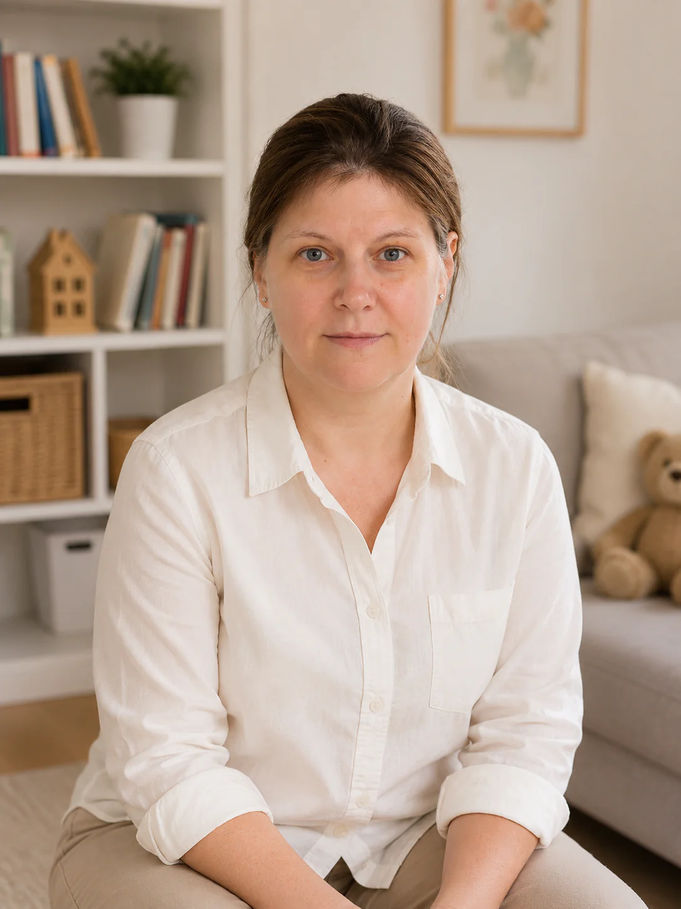

Новорождённые и груднички
Полный цикл ухода: сон, питание, прикорм, гигиена, наблюдение за режимом.
Спокойная и надёжная русскоязычная няня для новорождённых и детей до 7 лет. Москва • Дубай • Возможны поездки.

Меня зовут Мария. Я работаю как няня для новорождённых и детей дошкольного возраста, помогая семьям создать спокойную, безопасную и предсказуемую среду для ребёнка.
Мой подход — не только уход, но и система: режим, питание, сон, прогулки, развитие, дисциплина и спокойная атмосфера дома.
Полный цикл ухода: сон, питание, прикорм, гигиена, наблюдение за режимом.
Прогулки, игры, чтение, развитие навыков самостоятельности и дисциплины.
Мышление, речь, внимание, бытовые навыки, подготовка к школе в мягком формате.
Помощь в поездках, переездах и адаптации ребёнка к новой обстановке.
Сон, питание, прогулки и занятия выстроены спокойно и последовательно.
Без давления, суеты и лишнего стресса для ребёнка и семьи.
Внимание к деталям, гигиене, бытовым рискам и самочувствию ребёнка.
Режим, быт и развитие ребёнка выстраиваются спокойно и понятно.
Практический опыт работы с детьми разного возраста.
Опыт ухода за новорождёнными, грудничками и малышами до 7 лет.
Собственный опыт воспитания детей помогает лучше понимать потребности семьи.
Возможна помощь в поездках, переездах и адаптации ребёнка.
Опыт работы с новорождёнными, грудничками и дошкольниками, включая семьи с несколькими детьми. Возможна работа с проживанием, на вахте, сопровождение семьи в поездках между Москвой и Дубаем, а также помощь в адаптации ребёнка к новой обстановке.
Главный приоритет — безопасность ребёнка, доверие родителей и стабильная, предсказуемая среда дома.
Мария помогала нашей семье с ребёнком в первые месяцы после рождения. Очень спокойный, внимательный и надёжный человек.
Ребёнок быстро привык, режим наладился буквально за несколько дней. Мы чувствовали себя спокойно и уверенно.
Мария сопровождала нашу семью в поездках и отлично справлялась с детьми разного возраста.
Отвечаю в WhatsApp. Возможна работа в Москве и Дубае, а также сопровождение семьи в поездках и командировках.